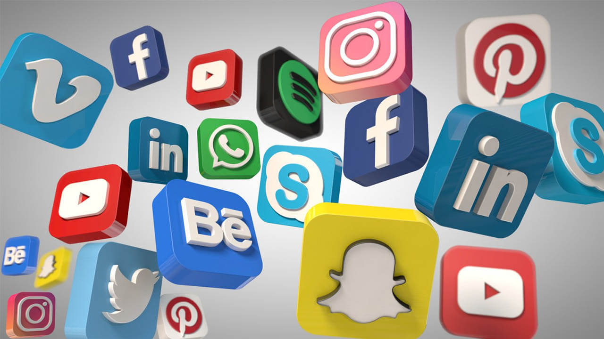

Teknologi dalam Pendidikan

Di era digital, teknologi telah secara signifikan mengubah dunia pendidikan,
menjadikannya lebih mudah diakses, interaktif, dan efisien. Integrasi
teknologi dalam pembelajaran memberikan siswa berbagai alat untuk
meningkatkan pengetahuan dan keterampilan mereka di luar ruang kelas
tradisional.
Baca selengkapnya...
Pengaruh Game Mobile Legends: Bang Bang terhadap Pemain dan Masyarakat

Mobile Legends: Bang Bang (MLBB) adalah salah satu game mobile paling populer di dunia, terutama di Asia Tenggara. Sejak dirilis pada tahun 2016, game ini berhasil menarik jutaan pemain dari berbagai kalangan, mulai dari anak-anak hingga orang dewasa. Namun, seperti halnya game lain, MLBB memiliki pengaruh positif maupun negatif terhadap pemain dan masyarakat.
Baca selengkapnya...
Media Sosial: Menghubungkan atau Justru Menjauhkan?

Media sosial telah menjadi bagian tak terpisahkan dari kehidupan modern. Dari Facebook hingga TikTok, platform ini memungkinkan kita untuk tetap terhubung dengan keluarga, teman, dan bahkan orang asing dari seluruh dunia. Namun, di balik manfaatnya, muncul pertanyaan: apakah media sosial benar-benar mendekatkan kita, atau justru menjauhkan hubungan sosial di dunia nyata?
Baca selengkapnya...